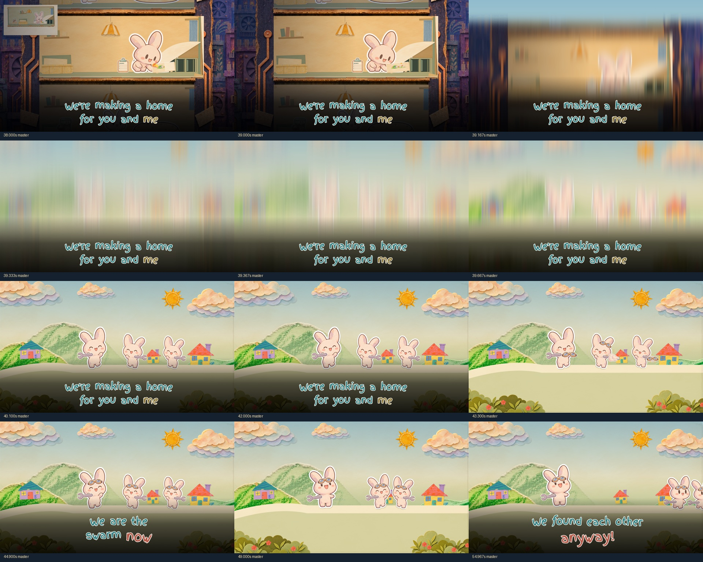

Upward camera turn into a full-screen imagined landscape. Original crafting timings and full-width captions retained.

Independent review covers source and sampled frames. The speed and feel of the turn await director playback.